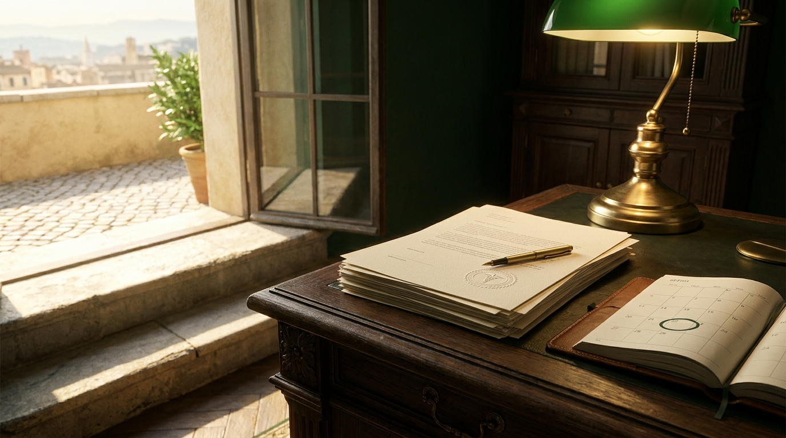

Malattia per depressione: quando uscire di casa non giustifica il licenziamento
La Cassazione torna sul rapporto tra malattia e controlli datoriali. Un lavoratore in malattia per depressione può svolgere attività esterne, purché non compromettano e anzi favoriscano la guarigione. Il licenziamento basato sulla sola presenza fuori casa è illegittimo. La pronuncia ridisegna l'onere della prova e impone al datore di lavoro maggiore cautela prima di contestare condotte extralavorative.

Il caso
Una operatrice di call center, assente per malattia a causa di una sindrome depressiva, viene sorpresa a partecipare ad attività esterne legate a una cooperativa e a un'associazione culturale. Il datore di lavoro contesta la condotta e procede al licenziamento, ritenendo che lo svolgimento di tali attività fosse incompatibile con lo stato di malattia dichiarato.
La Cassazione Civile ha annullato il licenziamento. Il punto centrale: nelle patologie di natura depressiva, lo svolgimento di attività esterne moderate non è di per sé sintomo di simulazione, ma può rientrare nel percorso terapeutico. Per questo tipo di disturbi, infatti, l'isolamento domestico può aggravare il quadro clinico, mentre la socialità e l'attività possono concorrere alla guarigione.
Inquadramento normativo
La cornice resta quella della legge n. 604 del 1966, che impone al licenziamento un giustificato motivo o una giusta causa. Quando il recesso si fonda su una presunta violazione degli obblighi di correttezza durante la malattia, occorre dimostrare che la condotta del lavoratore abbia effettivamente ritardato o pregiudicato il rientro in servizio.
Non basta, quindi, accertare che il dipendente sia uscito di casa o abbia svolto un'attività. Serve la prova di un nesso tra quella condotta e un aggravamento o un ritardo della guarigione. È qui che la Cassazione interviene sull'onere della prova: spetta al datore di lavoro dimostrare l'incompatibilità della condotta con lo stato patologico, non al lavoratore giustificare ogni propria attività.
Nelle patologie psichiche questa valutazione richiede un approccio specifico. Ciò che per una malattia fisica (una frattura, un'infezione) potrebbe apparire incompatibile con il riposo, per una sindrome depressiva può rappresentare l'opposto: un fattore di recupero clinicamente supportato.
Implicazioni pratiche
Per il datore di lavoro la conseguenza è netta. Il ricorso a investigatori privati o a segnalazioni di terzi non è sufficiente, da solo, a fondare un licenziamento. Occorre un accertamento qualificato sulla natura della patologia e sull'effettiva incidenza della condotta contestata.
Per il lavoratore in malattia, la pronuncia non legittima qualunque attività. Resta fermo il divieto di condotte che ostacolino la guarigione o che dimostrino la simulazione dello stato di malattia. Cambia però il metro di valutazione: lo svolgimento di un'attività esterna va letto alla luce della specifica patologia diagnosticata.
Il distinguo è clinico prima ancora che giuridico. Per questo la documentazione medica, e in particolare le indicazioni terapeutiche del professionista che ha in cura il lavoratore, diventano elementi decisivi nel contenzioso.
Cosa fare in concreto
Per il datore di lavoro:
- Prima di contestare una condotta extralavorativa, verificate la natura della patologia: per i disturbi psichici l'attività esterna può essere terapeutica e non incompatibile con la malattia.
- Non fondate il recesso sulla sola presenza del lavoratore fuori dal domicilio. Documentate il nesso tra la condotta e un effettivo pregiudizio alla guarigione.
- Acquisite un supporto tecnico-medico qualificato prima di avviare il procedimento disciplinare.
Per il lavoratore:
- Conservate la documentazione clinica e le indicazioni terapeutiche del medico curante, soprattutto quando il percorso prevede attività o socialità.
- Evitate condotte oggettivamente incompatibili con lo stato dichiarato o che possano apparire simulatorie.
- In caso di contestazione, raccogliete tempestivamente i riscontri medici sul nesso tra l'attività svolta e il percorso di guarigione.
Una valutazione caso per caso
La decisione non introduce automatismi a favore del lavoratore. Conferma piuttosto un principio di proporzionalità e di concretezza: ogni patologia ha una sua dinamica, e il giudizio sull'incompatibilità tra malattia e condotta va calato sul singolo quadro clinico. Per i disturbi depressivi, in particolare, la presunzione che l'uscita di casa equivalga a simulazione non regge.
Consigliamo, in entrambe le prospettive, di affrontare queste situazioni con un'istruttoria documentale solida e con il supporto di una valutazione medico-legale, prima ancora di assumere o contestare qualunque decisione.
Disclaimer
Contributo informativo a cura di Tamburro & Partners - Avv. Giuseppe Tamburro. Non costituisce parere legale.
Ogni storia di lavoro ha i suoi tempi.
Se gestisci HR e vuoi un confronto su contenzioso, ispezioni o licenziamenti, scrivi allo studio. Ti rispondiamo entro un giorno lavorativo.